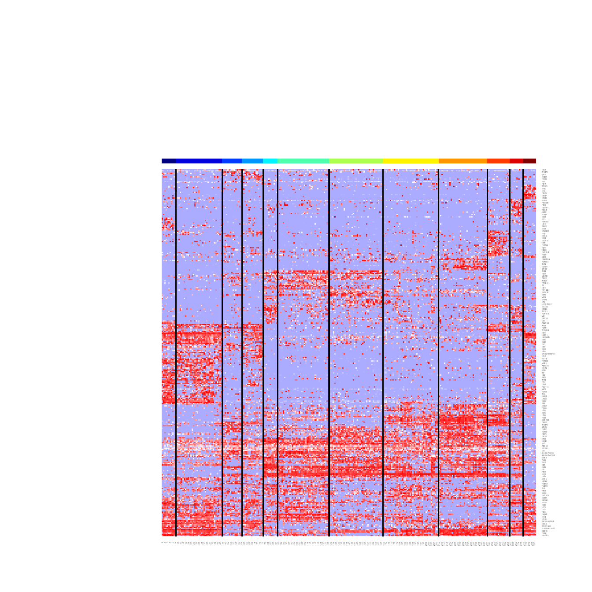

Overview of scrattch hicat
Zizhen Yao, Cindy van Velthoven, Adriana Sedeno-Cortes, Changkyu Lee, Lawrence Huang
2020-03-27
Source:vignettes/scrattch.hicat_release.Rmd
scrattch.hicat_release.Rmdscrattch.hicat offers functions to perform iterative
clustering for single cell RNAseq datasets.
The scrattch.hicat package is one component of the
scrattch suite of packages for Single Cell
RNA-seq Analysis for
Transcriptomic Type
CHaracterization from the Allen Institute.
hicat stands for Hierarchical,
Iterative Clustering for Analysis
of Transcriptomics.
The pipeline consists of the following key steps:
- Dataset formatting and setup
- Parameter specification
- Iterative Clutering
- High variance gene selection
- Dimensionality reduction using PCA or WGCNA
- Dimension filtering based on QC
correlation
- Jaccard-Louvain or hierarchichal (Ward) clustering
- High variance gene selection
- Cluster merging based on presence of differentially expressed genes
This process is iteratively repeated within each resulting cluster until no more clusters meet differential gene expression and cluster size termination criteria.
We can inspect and visualize the results of consensus clustering:
Consensus clustering was introduced to ensure robustness of clustering:
For this vignette, we use a subset of the dataset published in Tasic, et al. (2016) Nature Neuroscience, which is available in the tasic2016data package:
if(!"tasic2016data" %in% rownames(installed.packages())) {
devtools::install_github("AllenInstitute/tasic2016data")
}
library(tasic2016data)This vignette depends on a few other packages, in addition to
scrattch.hicat:
library(dendextend)
library(matrixStats)
library(Matrix)
library(scrattch.hicat)#> scrattch.hicat version: 1.0.0Dataset formatting and setup
First prepare the datasets
# Load sample annotations (anno)
anno <- tasic_2016_anno
# Make a data.frame of unique cluster id, type, color, and broad type
ref.cl.df <- as.data.frame(unique(anno[,c("primary_type_id", "primary_type_label", "primary_type_color", "broad_type")]))
# Standardize cluster annoation with cluster_id, cluster_label and cluster_color. These are the required fields to visualize clusters properly.
colnames(ref.cl.df)[1:3] <- c("cluster_id", "cluster_label", "cluster_color")
# Sort by cluster_id
ref.cl.df <- ref.cl.df[order(ref.cl.df$cluster_id),]
row.names(ref.cl.df) <- ref.cl.df$cluster_id
ref.cl <- setNames(factor(anno$primary_type_id), anno$sample_name)Convert counts to CPM and take log2 transformation
norm.dat <- log2(cpm(tasic_2016_counts)+1)If you have a very large matrix, we recommend you convert it to a sparse matrix using the Matrix package to save memory:
norm.dat <- Matrix(cpm(tasic_2016_counts), sparse = TRUE)
norm.dat@x <- log2(norm.dat@x+1)For this demo, we’ll select a small subset of CGE-derived interneurons for clustering. This gives us a set of 284 single-cell transcriptomic profiles to work with.
select.cells <- with(anno, sample_name[primary_type_label!="unclassified" & grepl("Igtp|Ndnf|Vip|Sncg|Smad3",primary_type_label)])Parameter specification
The final number of clusters produced by this iterative clustering
algorithm is largely determined by the required cell type resolution
specified by the user. The cell type resolution is defined by
differential expression (DE) criteria between every pair of clusters.
The users can specify these criteria ahead of time, for reuse in hicat
functions by using the de_param() function.
We compute statistical singificance of DE genes using
limma, with two key parameters specified below:
padj.th: adjusted p value threshold for DE genes.
lfc.th: log2 fold change threshold for DE genes.
We also require DE genes to have a relatively binary (on/off)
expression pattern, specified by the following parameters:
low.th: The minimum value used to determine whether a
gene is detected in a given cell or not. This threshold is applied to
log2-transformed, normalized data. The default value is 1. Users can
specifiy different thresholds for different genes if necessary.
For every pair of clusters (one as foreground, and the other as
background), we define q1, and q2 as the proportion of cells with
expression > low.th in the foregound and background
cluster respectively.
q1.th: For up regulated genes, q1 should be greater
than q1.th in the foreground set.
q2.th: For up regulated genes, q2 should be smaller
than q2.th in the background set.
q.diff.th: The difference, defined as abs(q1 -
q2)/max(q1, q2) should be greater than q.diff.th.
By default, q1.th = 0.5, q2.th = NULL,
and q.diff.th = 0.7.
The user can also ignore these parameters by setting them all to
NULL.
For high-depth datasets, like those generated using SMARTerV4 or
Smart-Seq2, we recommend starting with q1.th = 0.5
.
For low-depth datasets, like those generated using Dropseq or 10X
Genomics, we recommend starting with q1.th = 0.3 due to
the generally lower gene detection per cell in these datasets.
When focusing on discrete cell types, set q.diff.th
closer to 1.
If splitting cell types based on graded gene expression variation is of
interest, adjust q.diff.th closer to 0.
To determine whether two clusters are seperable based on DE genes, we
define de.score as the sum of -log10(adjusted Pvalue)
for all DE genes. Each gene contributes at most 20 towards the sum. All
clusters should have pairwise de.score greater than
de.score.th.
For small datasets (#cells < 1000), we recommend
de.score.th = 40.
For large datasets (#cells > 10000), we recommend
de.score.th = 150.
de.param <- de_param(padj.th = 0.05,
lfc.th = 1,
low.th = 1,
q1.th = 0.5,
q.diff.th = 0.7,
de.score.th = 40)Perform clustering
scrattch.hicat can perform clustering using WGCNA or PCA
for dimensionality reduction. WGCNA mode is good for detecting rare
clusters and provides cleaner cluster boundaries, while PCA is more
scalable to large datasets, captures combinatorial marker expression
patterns more effectively, and is more sensitive to low-depth
datasets.
We recommend using WGCNA for smaller, high-depth datasets (< 4,000 samples; > 5,000 genes detecter per sample), and PCA for large or low-coverage datasets (> 4,000 samples or < 5,000 genes detected per sample). Another consideration is that WGCNA is considerably slower than PCA. Note that while the whole clustering pipeline scales quite well with the number of cells, the running time heavily depends on the cell type complexity as clustering is iterative.
First, let us just run one round of clustering using WGCNA mode using high stringency to check the broad cell types
onestep.result <- onestep_clust(norm.dat,
select.cells = select.cells,
dim.method = "WGCNA",
de.param = de_param(de.score.th=500))
#> ..done.
#> Finding nearest neighbors...DONE ~ 0.003 s
#> Compute jaccard coefficient between nearest-neighbor sets...DONE ~ 0.02 s
#> Build undirected graph from the weighted links...DONE ~ 0.023 s
#> Run louvain clustering on the graph ...DONE ~ 0.008 s
#> Return a community class
#> -Modularity value: 0.7715781
#> -Number of clusters: 9Take a quick look at the clustering heatmap
display.result = display_cl(onestep.result$cl, norm.dat, plot=TRUE, de.param=de.param)
#> Warning in is.null(Rowv) || is.na(Rowv): 'length(x) = 2 > 1' in coercion to
#> 'logical(1)'Apply iterative clustering pipeline for finer splits based on existing clusters using more relaxed threshold.
WGCNA.clust.result <- iter_clust(norm.dat,
select.cells = select.cells,
dim.method = "WGCNA",
de.param = de.param,
result=onestep.result)You can apply iterative clustering pipeline from scratch.
WGCNA.clust.result <- iter_clust(norm.dat,
select.cells = select.cells,
dim.method = "WGCNA",
de.param = de.param)Eliminate technical artfacts at dimension reduction state
Technical variation that should be masked during the clustering process can be specified using a matrix that we term rm.eigen. If batch effects are present, you can use the first principle component of batch-specific genes as a column in rm.eigen.
QC-related factors, such as sequencing depth, gene detection limits,
and fraction of reads mapped to transcriptome also tend to correlate
with systemetic technical variation in gene expression.
You can directly use proper transformation of these QC-related
variables, or use the first principle component of the genes that
correlate with these QC factors. The latter approach tends to work
better with real datasets. When rm.eigen is specified,
any reduced-dimension vectors during clustering that have correlation
greater than rm.th with any columns of
rm.eigen are ignored during clustering.
We recommend that users to first explore their data by running the clustering pipeline without setting rm.eigen. If any batch specific or QC-driven clusters appear to cause problems, the user can create rm.eigen as demonstrated below, and rerun the pipeline.
gene.counts <- colSums(norm.dat > 0)
rm.eigen <- matrix(log2(gene.counts), ncol = 1)
row.names(rm.eigen) <- names(gene.counts)
colnames(rm.eigen) <- "log2GeneCounts"WGCNA.clust.result <- iter_clust(norm.dat,
select.cells = select.cells,
dim.method = "WGCNA",
de.param = de.param,
rm.eigen = rm.eigen)Cluster merging based on presence of differentially expressed genes
Throughout the iterative clustering process performed by
iter_clust(), the function checked whether clusters at any
iteration can be seperated by DEG. However, clusters from different
iterations can end up very similar. Thus, it is necessary to check
whether all the clusters are seperable by DEGs in the end. Clusters are
merged in an order defined by the pairs of clusters that are nearest
neighbors, which are computed in a reduced dimension space defined by
rd.dat.
Here, we use the set of markers produced by iter_clust()
to define the reduced dimensions:
WGCNA.merge.result <- merge_cl(norm.dat,
cl = WGCNA.clust.result$cl,
rd.dat = t(norm.dat[WGCNA.clust.result$markers, select.cells]),
de.param = de.param)Alternatively, the transpose of rd.dat could be specified as “rd.dat.t”:
WGCNA.merge.result <- merge_cl(norm.dat,
cl = WGCNA.clust.result$cl,
rd.dat.t = norm.dat[WGCNA.clust.result$markers, select.cells],
de.param = de.param)Compare and annotate clusters against reference cluster annotation
In this demo, we have previously derived cluster labels from Tasic,
et al. (2016). To see how these cluster calls match up to those
generated by scrattch.hicat, we can compare and annotate
the clusters based on the reference cluster annotation.
#> [1] 50
Note that the clustering differs slightly from the reference clusters. Particularly, the original Ndnf Cxcl14 is split into two clusters, and one of this cluster also contain cells from Vip Gpc3 cluster. Based on analysis based on a bigger dataset, we know that the cell type diversities for CGE-derived interneurons are richer than what we described here, and this clustering analysis is far from saturation due to small number of cells.
Now Let’s compute DE genes between every pair of clusters. To generate the heatmap, use the top 20 DE genes by default. If you have many clusters, the heatmap can be too large to display. The users may choose different “n.markers”
display.result = display_cl(cl, norm.dat, plot=TRUE, de.param=de.param, min.sep=4, n.markers=20)
#> Warning in is.null(Rowv) || is.na(Rowv): 'length(x) = 2 > 1' in coercion to
#> 'logical(1)'
de.genes= display.result$de.genesAt this point, check the clusters manually to determine if some clusters are outliers. Define cl.clean as the clusters after removing outliers.
cl.clean <- droplevels(cl) We find it helpful to use hierarchical
structure to categorize cell types at different resolution. To build
dendrogram, we use cluster-cluster correlation matrix based on cluster
medians of the top 50 genes between every pair of clusters with
select_markers() and build_dend(). The
confidence of each branch point can be estimated by bootstrap approach
implemented by pvclust package, which is encapsulated by
build_dend().
select.markers = select_markers(norm.dat, cl.clean, de.genes=de.genes,n.markers=50)$markers
cl.med <- get_cl_medians(norm.dat[select.markers,], cl)
##The prefered order for the leaf nodes.
l.rank <- setNames(1:nrow(cl.df), row.names(cl.df))
##Color of the leaf nodes.
l.color <- setNames(as.character(cl.df$cluster_color), row.names(cl.df))
dend.result <- build_dend(cl.med[,levels(cl.clean)],
cl.cor=NULL,
l.rank,
l.color,
nboot = 100)
dend <- dend.result$dend
###attach cluster labels to the leafs of the tree
dend.labeled = dend
labels(dend.labeled) <- cl.df[labels(dend), "cluster_label"]
plot(dend.labeled)
Reorder the clusters based on the dendrogram:
cl.clean <- setNames(factor(as.character(cl.clean), levels = labels(dend)), names(cl.clean))
cl.df.clean <- cl.df[levels(cl.clean),]Plot cluster-cluster correlation matrix:
cl.cor <- dend.result$cl.cor
row.names(cl.cor) <- colnames(cl.cor) <- cl.df[row.names(cl.cor), "cluster_label"]
heatmap.3(cl.cor,
Rowv = dend, Colv = dend,
trace = "none", col = heat.colors(100),cexRow=0.8, cexCol=0.8,
breaks = c(-0.2, 0.2, seq(0.2, 1, length.out = 99)))
#> Warning in is.null(Rowv) || is.na(Rowv): 'length(x) = 2 > 1' in coercion to
#> 'logical(1)'
#> Warning in is.null(Colv) || is.na(Colv): 'length(x) = 2 > 1' in coercion to
#> 'logical(1)'
#> Warning in Colv == "Rowv" && !isTRUE(Rowv): 'length(x) = 2 > 1' in coercion to
#> 'logical(1)'
t-SNE plots
Generate t-SNE coordinates and a plot using
plot_tsne_cl():
tsne.result <- plot_tsne_cl(norm.dat, select.markers, cl, cl.df, fn.size=5, cex=1)
#> Loading required package: Rtsne
tsne.df = tsne.result$tsne.df
tsne.result$g
Plot expression of a set of genes using the t-SNE coordinates with
plot_tSNE_gene():
tsne.df <- tsne.result$tsne.df
## 6330527O06Rik is alias for Lamp5, and A930038C07Rik is alais for Ndnf
markers <- c("Vip","6330527O06Rik","Sncg","Cxcl14","Gpc3","A930038C07Rik")
gene.plots <- plot_tSNE_gene(tsne.df, norm.dat, markers)
multiplot(plotlist = gene.plots, cols = 3)
Bootstrapping for Consensus clustering
The iterative clustering pipeline tends to produce many clusters,
with increased uncertainty as we try to split the clusters at finer
resolution. Therefore, it is important to assess the robustness of
clustering results. We address this problem by performing clustering
many times on 80% of randomly subsampled cells, keep track of how often
each cell is clustered with each other cell (a cell-cell co-clustering
matrix), and use these frequencies of cell-cell co-clustering to infer
consensus clustering. We also compute statistics to evaluate our
confidence in the seperation between every pair of consensus clusters.
run_consensus_clust() is a convenient wrapper function for
performing this bootstrapped, iterative clustering process. For faster
execution, we use “PCA” mode.
If you have a multi-core computer, this function can be run in
parallel by setting mc.cores to the number of cores you
can use.
Note that this can result in high memory consumption with a high number
of parallel processes. Try using small number of cores first to monitor
the memory consumption:
result <- run_consensus_clust(norm.dat,
niter = 20,
de.param = de.param,
rm.eigen = rm.eigen,
dim.method = "pca",
output_dir = "subsample_PCA",
mc.cores = 4)Compare the consensus clustering results against the reference clusters, and we see that PCA mode produce clusters at lower resolution than WGCNA mode. Small clusters like Igtp, which has very distinct transcriptional signature, still got merged with other clusters.
#> [1] 50
Breakdown of consensus clustering
run_consensus_clust() is a wrapper function that
performs the following steps:
- Perform clustering on subsampled cells:
d <- paste0("subsample_PCA")
dir.create(d)
n_iter <- 10
all.cells <- select.cells
subsample.result <- sapply(1:n_iter,
function(i) {
prefix <- paste0("iter",i)
tmp.cells <- sample(all.cells, round(0.8 * length(all.cells)))
result <- iter_clust(norm.dat,
select.cells = tmp.cells,
prefix = prefix,
dim.method = "pca",
de.param = de.param)
save(result, file = file.path(d, paste0("result.", i, ".rda")))
}
)- Collect cell-cell co-clustering probablities:
result.files <- file.path(d, dir(d, "result.*.rda"))
co.result <- collect_subsample_cl_matrix(norm.dat, result.files, all.cells)- Infer consensus clusters based on the cell-cell co-clustering matrix:
consensus.result <- iter_consensus_clust(cl.list = co.result$cl.list,
cl.mat = co.result$cl.mat, norm.dat = norm.dat, select.cells = all.cells,
de.param = de.param, merge.type = "directional", method = "auto",
result = NULL)- Adjust cluster boundaries to optimize within-cluster co-clustering probabilties:
refine.result <- refine_cl(consensus.result$cl,
cl.mat = co.result$cl.mat,
tol.th = 0.01,
confusion.th = 0.8,
min.cells = de.param$min.cells)- Double-check if all clusters are separable based on DE genes again:
merge.result <- merge_cl(norm.dat,
refine.result$cl,
rd.dat.t = norm.dat[consensus.result$markers,select.cells],
de.param = de.param,
merge.type = "directional",
return.markers = FALSE)